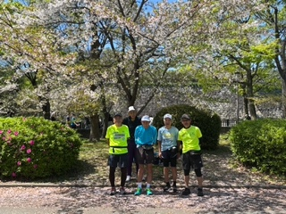

2026-04-11 04:32:00
2026年4月11日（土）（大阪城公園、晴れ、気温22℃）（担当廣瀬利光）
| No | 氏名 | 種目 | タイム | フル百 |
|---|---|---|---|---|
| 1 | 廣瀬 利光 | フル | 5:58:47 | 846 |
| 2 | 藤村 謙一 | フル | 7:15:39 | 126 |
| 3 | 井上 進 | フル | 7:25:35 | 791 |
| 4 | 渡邉 源治 | フル | 8:38:50 | 719 |
| 5 | 吉藤 尚 | フル | 10:19:00 | 192 |
コメント 午前は曇りで午後から暑い日差しとなりました。大阪城はまだ桜が 咲いて大勢の花見客が宴会を楽しんでいました。 今日は全員が完走して頑張りました。
